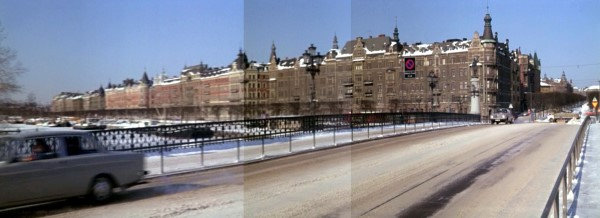
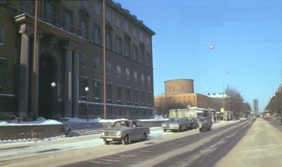

THE PERSUADERS!: The Morning After (Leslie Norman: 1971)
Danny sees Bret and his new wife to the plane as they fly out of Stockholm.
(Identified by Jaz Wiseman, September 2010)

THE PERSUADERS!: The Morning After (Leslie Norman: 1971)
Danny arrives at Brett's hotel.
(Spotted by Paul Stroud, December 2009)

THE PERSUADERS!: The Morning After (Leslie Norman: 1971)
Crossing bridge on the way to the Marriage Bureau.
(Spotted by Paul Stroud, December 2009)

THE PERSUADERS!:The Morning After (Leslie Norman: 1971)
After escaping from the Marriage Bureau Danny jumps into Bibi Bergman's
car. She offers to drive him to Gunar Christianson's office at the
health club.
(Spotted by Paul Stroud, June 2010)

THE PERSUADERS!:The Morning After (Leslie Norman: 1971)
Bret and Danny arrive at the Marriage Bureau.
(Spotted by Paul Stroud, December 2009)
'The Pink Villa', 4 Norrkroken, Lidingö, Stockholm, Sweden

Danny Wilde takes a taxi to Christianson's martial arts academy (transposed left to right).
(Identified by Sietse Postma, July 2023)
Film:
MISS AND MRS SWEDEN (1969) Return to Index